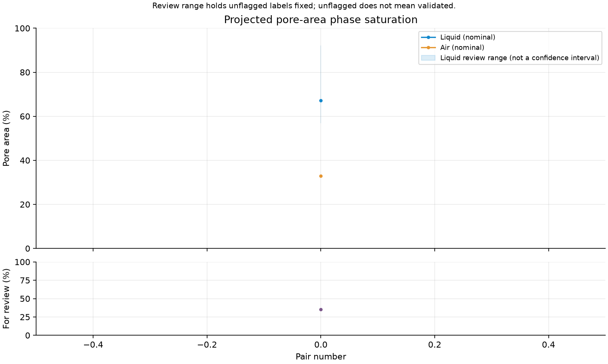

Liquid–air phase analysis: batch edition
Edit settings.py, then open RUN_ANALYSIS.py in Spyder and press F5. The supplied demo is ready to run.
What changed
Provide a separate raw grain reference for binarization, or load an already binary grain mask. Select the B parity manually, set inclusive source indices, and process alternating pairs with one fixed pore mask. Saturation is saved after each pair; interrupted runs can resume.
Saturation output

The single real pair supplies one timestep. The shaded review range holds unflagged labels fixed; it is not a confidence interval. Camera clipping is stored separately.
Image evidence and gradients

The full illustrated report explains grain geometry, fluorescence priority, shiny-edge exceptions, signed subtraction, two-sided gradients, wall/fringe inference and review flags. The algorithm approximates junction reasoning through region and wall adjacency; it does not explicitly reconstruct every triple junction.